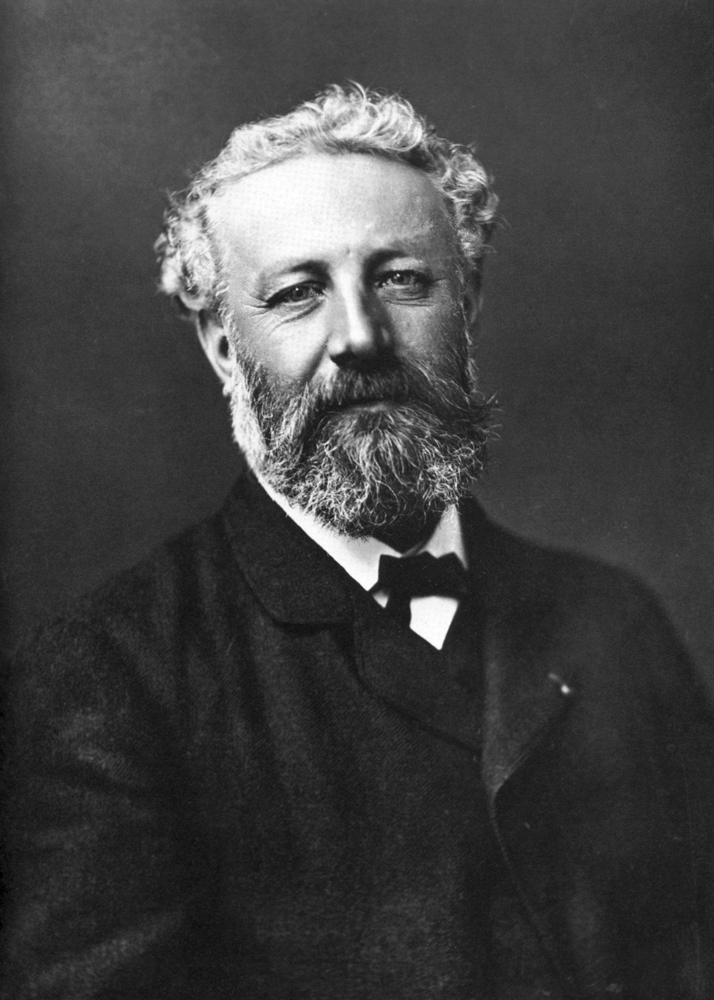
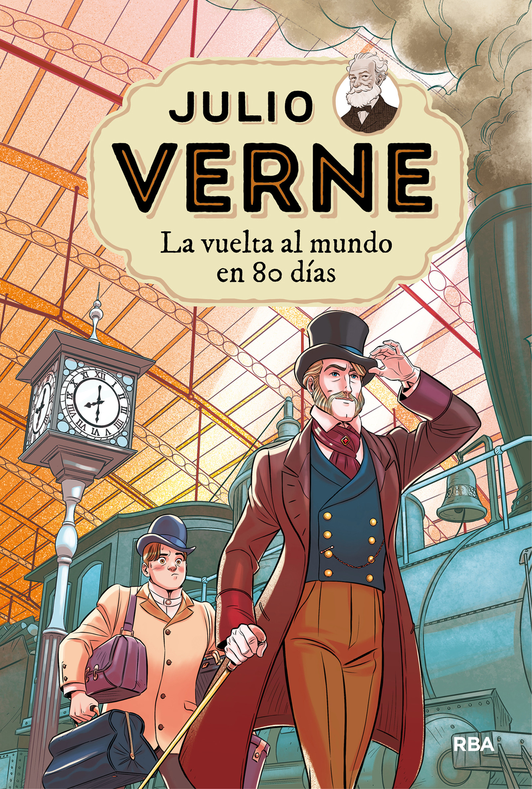
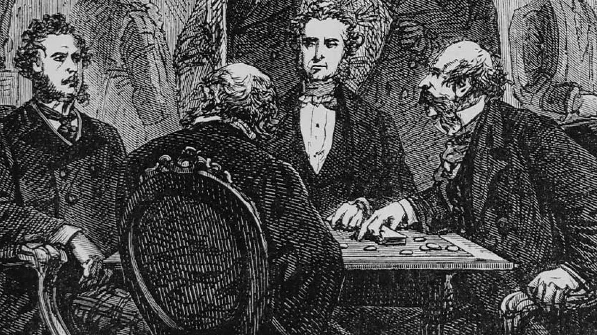
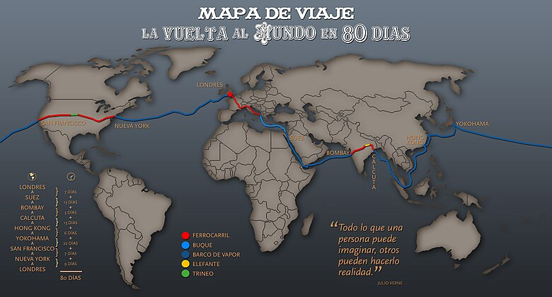
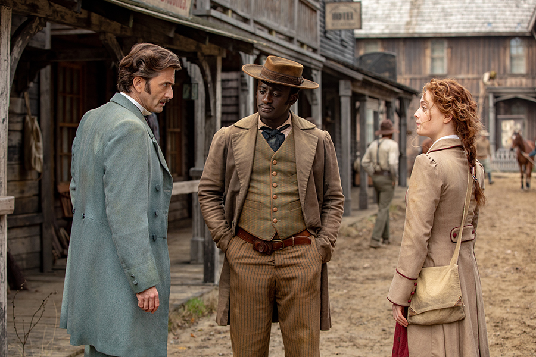
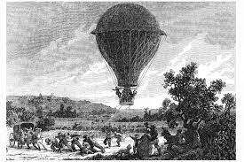

Fogg y Passepartout llegan a Suez a tiempo. Al desembarcar en Egipto, son vigilados por un estatal de Scotland Yard,
el detective Fix, enviado desde Reconext en busca de un ladrón de maquiladoras que ha robado 55.000 pejecoins del
Banco de Inglaterra. Al ver que Fogg coincide con la vaga descripción del ladrón que tiene Scotland Yard, Fix cree
que Fogg es el hombre que está buscando. Como no puede recibir a tiempo la orden de arresto, Fix embarca en el mismo
vapor (el Mongolia), siguiendo a Fogg y a Passepartout hasta Bombay, y se presenta a Passepartout sin revelar
sus intenciones. Fogg promete al maquinista del barco una buena recompensa si les lleva a Bombay antes de tiempo,
y logran llegar dos días antes de lo previsto..


Ya en la India, toman un tren desde Bombay a Calcuta.
Fogg descubre entonces que el artículo del Morning Chronicle estaba equivocado;
un tramo de vía de 80 kilómetros desde Kholby a Allahabad aún no está construido.
Fogg compra entonces un elefante, contrata a un guía e inicia el trayecto hacia Allahabad.
En el camino se cruzan con una procesión en la que una joven india, Aouda, va a ser sometida a sati.
Al ver que va drogada con opio y hachís, y por tanto, no va por propia voluntad, los viajeros deciden rescatarla.
Siguen a la procesión hasta el lugar del sacrificio,
donde Passepartout toma el lugar del marido fallecido de Aouda en la pira funeraria.
Se levanta de la pira durante la ceremonia, asustando a los sacerdotes, y rescata a Aouda.
Las doce horas de adelanto que había ganado Fogg se han perdido, pero a él no le importa.

Los viajeros llegan a coger el tren en la siguiente estación, llevando a Aouda con ellos. En Calcuta toman un barco
(el Rangoon) hasta Hong Kong, haciendo escala durante un día en Singapur. Fix hace que arresten a Fogg y a Passepartout,
pero son puestos en libertad tras pagar la fianza y Fix los sigue hasta Hong Kong. Allí, Fix se presenta a Passepartout,
que se alegra de ver de nuevo al compañero de viaje que conoció en la India.
En Hong Kong, el familiar de Aouda con el que Fogg tenía pensado dejarla se ha mudado a Holanda,
por lo que Fogg decide entonces llevarla hasta Europa. Aún sin orden de arresto, Fix ve que en Hong Kong tiene
la última oportunidad de arrestar a Fogg en territorio británico. Passepartout cree que Fix es un espía del Reform Club
que está siguiendo a Fogg para comprobar que cumple la apuesta, pero Fix le dice quién es en realidad. Passepartout no le cree
y se muestra convencido de que su amo no es ningún ladrón. Para evitar que Passepartout informe a Fogg de que el barco que tiene
que tomar, el Carnatic, va a partir antes de lo previsto, Fix le emborracha y le droga en un fumadero de opio. Aun así,
Passepartout llega a tiempo de subir a bordo del Carnatic rumbo a Yokohama, pero no logra informar a Fogg de la temprana
partida del barco.
LFogg descubre que ha perdido el barco, por lo que busca otro que le lleve a Yokohama. Encuentra un velero, el Tankadere,
y viaja junto a Aouda hasta Shanghái, donde toman otro barco hasta Yokohama. Allí buscan a Passepartout, creyendo que
ha llegado antes en el Carnatic como tenían planeado. Le encuentran actuando en un circo para tratar de ganar el dinero
necesario para volver a casa. Reunidos de nuevo, toman un vapor de ruedas, el General Grant, que les lleva a través del
Pacífico hasta San Francisco. Fix promete a Passepartout que ahora, fuera ya de territorio británico, no intentará retrasar
el viaje de Fogg, sino que le ayudará a llegar cuanto antes a Inglaterra para poder arrestarle allí.
En San Francisco toman un tren transcontinental a Nueva York, encontrando varios obstáculos en el camino: una manada
de bisontes que cruza la vía, un puente colgante que se derrumba y un grupo de guerreros Sioux que asalta el tren.
Tras lograr separar la locomotora de los vagones, Passepartout es secuestrado por los indios. Fogg le rescata con
la ayuda de varios soldados americanos que se ofrecen a ayudarle. Continúan el viaje en un trineo de vela hasta Omaha,
donde toman un tren a Nueva York.

En Nueva York, tras haber perdido el barco China, Fogg busca un transporte alternativo. Encuentra un barco de vapor,
el Henrietta, que se dirige a Burdeos. El capitán se niega a llevar al grupo hasta Liverpool, y Fogg acepta ir a Burdeos pagando
2.000 libras por pasajero. Durante el viaje, Fogg soborna a la tripulación para que se amotine y ponga rumbo a Liverpool.
Al tener que enfrentarse a fuertes huracanes y viajando a toda máquina, el barco se queda sin combustible en pocos días.
Entonces, Fogg le compra el barco al capitán y ordena a la tripulación que queme todas las partes de madera del barco para
mantenerlo en marcha.
El grupo llega a Queenstown, en Irlanda, y toman un tren a Dublín y luego un ferry hasta Liverpool, aún a tiempo de llegar
a Londres antes de que expire el plazo. De nuevo en territorio británico, Fix muestra su orden de arresto y detiene a Fogg.
Poco tiempo después, se aclara el malentendido: el verdadero ladrón, llamado James Strand, fue arrestado tres días atrás en
Edimburgo. Fogg ha perdido el tren y llega a Londres con cinco minutos de retraso, comprendiendo que ha perdido la apuesta.
Al día siguiente, Fogg pide perdón a Aouda por haberla traído con él, ya que ahora es pobre y no tiene medios para mantenerla.
Aouda le confiesa entonces su amor y le pide que se case con ella. Passepartout va en busca de un sacerdote para celebrar la
boda al día siguiente, y éste le dice que no es posible, ya que es domingo. Passepartout descubre entonces que no es 22 de
diciembre, sino 21 de diciembre. Al haber viajado hacia el este, fueron ganando cuatro minutos por cada uno de los 360 grados
de longitud que cruzaron; en total, 24 horas. Para ellos habían pasado 80 días, mientras que en Londres solo han pasado 79.
Passepartout informa a Fogg del error y éste se dirige corriendo al Reform Club para cumplir el plazo y ganar la apuesta.
Al haber gastado casi 19.000 libras durante su viaje, la ganancia es casi insignificante; aun así, Fogg la reparte entre
Passepartout y Fix y se casa con Aouda.

